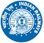

India has some of the most spectacular and unforgettable rail journeys in the world. Here you experience a simple way to find out
everything you need to know in one easy place. There's no better way to enjoy India's outback, cities, coastal towns and regional
areas in comfort.
Indian Railways Passenger Reservation Enquiry

Experience Our Services...